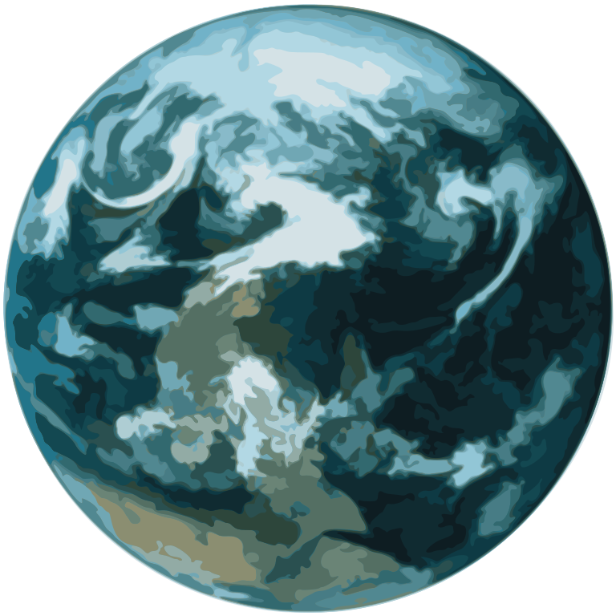

Exoplanets
Is there another Earth?
Scott Thomas
University of Cambridge
The Little Planet That Could

Why do we care?
How do we find these?
What do they look like?
What are the big questions?
Atmospheric characterisation
What are the big questions?
Unsolved problems
- high temperature and pressure minerals
- tectonics
- dynamos, cores, tides
- formation and links to planetesimals
- migration
- melting
- habitability
- earth analogues
- extraterrestrial life